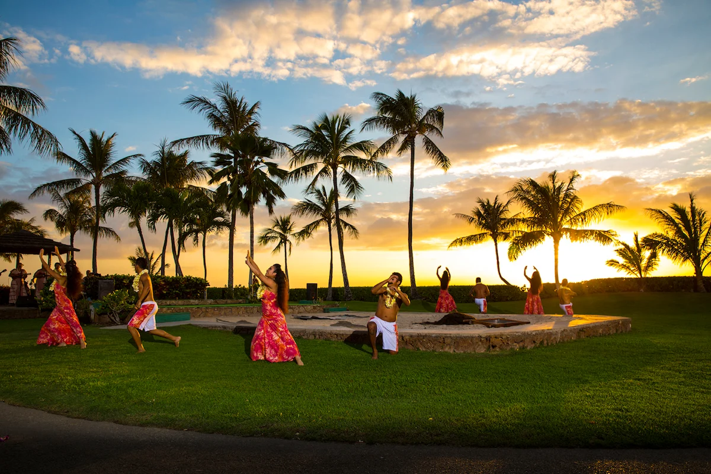
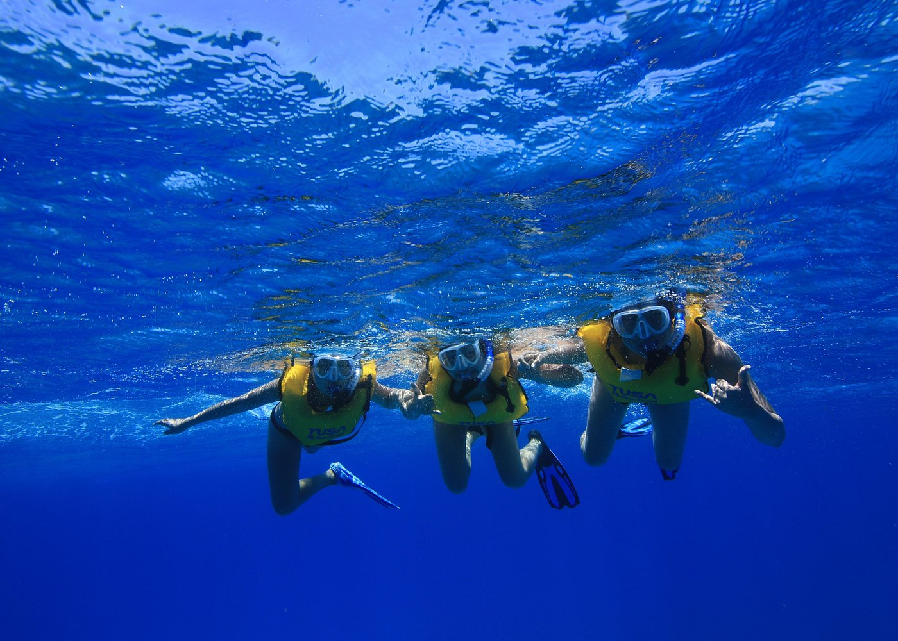
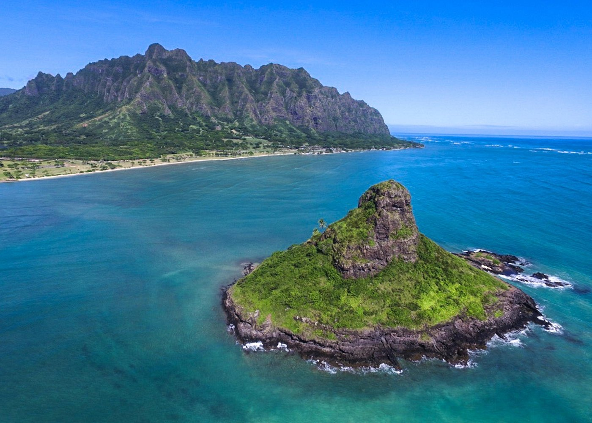

Experience a traditional Hawaiian Luau in a scenic location. The evening begins with a variety of cultural activities ideal for all ages. Learn how to make a coconut headband, string flower lei, or dance hula, and then sit down for a buffet dinner with a large selection of Hawaiian specialties like Kalua pork and Huli Huli chicken. Then settle in for the main event: an award-winning Polynesian fire dance performance.
Share the warm Hawaiian waters with green sea turtles, tropical fish, and more on a 2-hour snorkel excursion from Waikiki. No need to wear your flippers and mask on the plane, as all necessary gear is provided. Under the careful guidance of a tour leader, discover the vibrant sea life of Turtle Canyons. Above water wildlife sightings may include spinner dolphins, flying fish, and - in winter months - humpback whales. Read more about - Turtle Canyons Snorkel Excursion from Waikiki, Hawaii
Leave all the logistics of exploring Oahu up to this Circle Island all-inclusive day tour that lets you run on a Hawaiian time. Along with round-trip transport from Honolulu, lunch, and all entry fees included. Plus, a guide navigates the island so you can see main highlights such as Diamond Head, Halona Blowhole, Valley of the Temples, Mokoli'i Island, and more.
